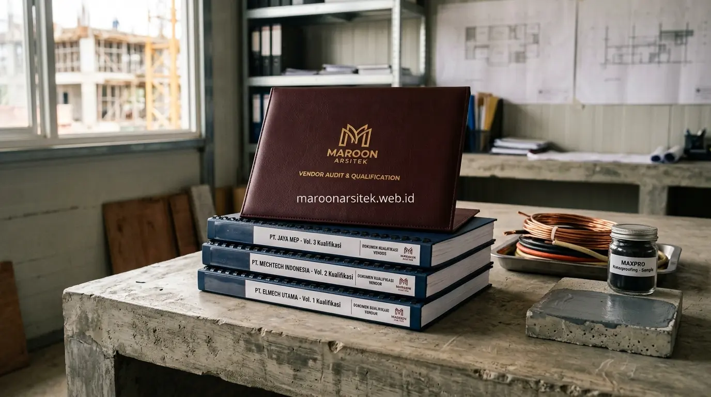
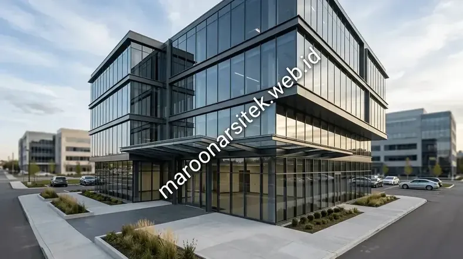

Jasa kontraktor bangunan komersial yang andal menerapkan manajemen risiko yang terstruktur, kurasi subkontraktor terverifikasi untuk setiap bidang pekerjaan, dan sistem manajemen proyek digital untuk koordinasi tim yang lebih efisien. Maroon Arsitek menggabungkan ketiga elemen ini untuk memastikan proyek ruko maupun kantor selesai sesuai jadwal dengan risiko yang terkendali melalui layanan jasa kontraktor bangunan terpercaya.
Ketepatan waktu proyek komersial tidak hanya bergantung pada perencanaan jadwal, tetapi juga pada kemampuan mengantisipasi risiko dan mengoordinasikan berbagai pihak yang terlibat dalam proses konstruksi. Bagian berikut menguraikan tiga elemen tambahan yang mendukung ketepatan waktu dan kualitas proyek bangunan komersial Anda.
Manajemen Risiko Proyek untuk Mencegah Kendala Tak Terduga
Manajemen risiko proyek dilakukan melalui identifikasi potensi kendala sejak tahap perencanaan, seperti risiko cuaca, ketersediaan material, atau kompleksitas perizinan, sehingga mitigasi dapat disiapkan sebelum kendala tersebut benar-benar terjadi dan mengganggu jadwal. Pendekatan proaktif ini membedakan manajemen proyek yang matang dari pendekatan reaktif yang hanya menangani masalah setelah muncul.
Setiap risiko yang teridentifikasi dipetakan berdasarkan tingkat dampak dan kemungkinan terjadinya, membantu tim manajemen proyek memprioritaskan mitigasi pada risiko dengan potensi dampak paling signifikan terhadap jadwal dan anggaran proyek.
Rencana kontinjensi disiapkan untuk risiko-risiko utama yang telah diidentifikasi, memberikan panduan tindakan yang jelas apabila risiko tersebut benar-benar terjadi selama proses konstruksi berlangsung.
Pemetaan Risiko Berdasarkan Dampak dan Kemungkinan Terjadinya
Kebutuhan prioritas mitigasi yang tepat dijawab melalui pemetaan risiko yang mempertimbangkan tingkat dampak dan kemungkinan terjadinya, membantu tim proyek fokus pada risiko yang paling berpotensi mengganggu jadwal dan anggaran secara signifikan.
Pemetaan ini menjadi dasar penyusunan rencana mitigasi yang efisien, mengalokasikan sumber daya pencegahan pada risiko prioritas tanpa menghabiskan waktu berlebihan pada risiko dengan dampak minimal terhadap keseluruhan proyek.
Kurasi Subkontraktor Terverifikasi untuk Setiap Bidang Pekerjaan
Kurasi subkontraktor terverifikasi memastikan setiap bidang pekerjaan spesialis, seperti instalasi mekanikal elektrikal atau pekerjaan waterproofing, ditangani oleh pihak dengan kompetensi dan rekam jejak yang telah dievaluasi sebelumnya. Kurasi ini menjaga standar kualitas konsisten meski melibatkan berbagai spesialisasi dalam satu proyek bangunan komersial.
Evaluasi subkontraktor mencakup verifikasi legalitas usaha, rekam jejak proyek sebelumnya, dan kapasitas sumber daya, memastikan setiap mitra kerja yang terlibat memenuhi standar yang ditetapkan sebelum dilibatkan dalam proyek klien.
Koordinasi antara subkontraktor dan tim inti proyek dikelola secara terpusat, memastikan setiap bidang pekerjaan spesialis tetap selaras dengan jadwal dan standar kualitas keseluruhan proyek bangunan komersial yang sedang dikerjakan.

Evaluasi Rekam Jejak Sebelum Melibatkan Subkontraktor
Kebutuhan kepastian kualitas dari setiap bidang spesialis dijawab melalui evaluasi rekam jejak subkontraktor pada proyek-proyek sebelumnya, memastikan kompetensi yang dimiliki benar-benar sesuai dengan kebutuhan spesifik proyek yang akan dikerjakan.
Evaluasi ini menjadi filter awal yang menjaga standar kualitas tetap terjaga, meski pekerjaan tertentu didelegasikan kepada pihak spesialis di luar tim inti yang menangani keseluruhan proyek bangunan komersial.
Penggunaan Sistem Manajemen Proyek Digital untuk Koordinasi Tim
Sistem manajemen proyek digital memfasilitasi koordinasi antara tim inti, subkontraktor, dan klien dalam satu platform terpusat, memudahkan pelacakan jadwal, alokasi tugas, dan komunikasi lintas pihak yang terlibat dalam proyek bangunan komersial. Sistem ini meningkatkan efisiensi koordinasi dibanding metode komunikasi konvensional yang terpisah-pisah.
Setiap tugas dan milestone proyek dicatat dalam sistem digital, memberikan visibilitas yang jelas mengenai status pekerjaan dan pihak yang bertanggung jawab pada setiap tahap, mengurangi risiko miskomunikasi antar pihak yang terlibat.
Notifikasi otomatis pada sistem membantu memastikan setiap pihak mendapat informasi terkini mengenai perkembangan tugas yang menjadi tanggung jawabnya, mendukung koordinasi yang lebih responsif sepanjang proses konstruksi berlangsung.
Visibilitas Status Pekerjaan melalui Platform Terpusat
Kebutuhan koordinasi yang efisien dijawab melalui visibilitas status pekerjaan yang tersaji dalam platform terpusat, memungkinkan seluruh pihak yang terlibat mengetahui perkembangan proyek tanpa perlu menunggu laporan manual yang memakan waktu.
Visibilitas ini mempercepat pengambilan keputusan ketika ditemukan kendala, karena seluruh pihak dapat mengakses informasi yang sama secara real-time tanpa hambatan komunikasi yang biasa terjadi pada metode koordinasi konvensional.
